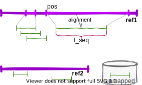
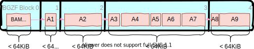
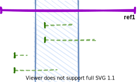

Journal Club
.BAM and .BAI
in SeqAn3
Marcel Ehrhardt (Free University Berlin)
BAM Format

- pos: 32bit,
|ref. sequence| < 4GiB - l_seq: 32bit,
|read| < 4 GiB - read 4bit encoded IUPAC (with gap
=)
- n_cigar_op: 16bit,
100M 20I, |cigar ops|< 65536 - cigar_op: 32bit, 4bit for (I,M,…), 28bit for length
- BAI index (bin): 16bit, whereas in .BAI has 32bit
BAM Format II
BAM File
- each block "special" gzip-Block
- uncompressed data < 64KiB
- Bam Format specified on (gunzip/bgunzip) Bamfile
bgzf -c -d my.bam > my.bam.raw
- convert sam to bam
samtools view -bS my.sam > my.bam
BAM File II
Observations:- samtools seem to start always a new block with an alignment
- => suspect to fragmentation?
BAM File III
From here on all figures only depict a read via the mapped length in the reference
What interval queries can we answer?
- reads contained in an interval, $\mathcal O(n\_cigar\_op)$
- reads intersecting an interval, $\mathcal O(n\_cigar\_op)$
- reads starting in an interval (rays), $\mathcal O(1)^*$
Indexing BAM (.BAI)
- BAM must be sorted by
(reference_id, left-most coordinatepos) - .CSI is a different index file, but similar to .BAI
- based on UCSC binning
- .BAI only allows |reference sequence|s < 512MiB
.BAI Main-Idea

- Have multiple bins that span a (different) region
- Put alignment in smallest containing bin


.BAI Interval-Query

- All alignments within a bin are completely contained.
- reads contained in a bin
- just look in smallest enclosing bin
- reads contained in an interval, somehow efficient
- reads intersecting an interval, not efficient

.BAI Aux. Structure
- Offers a aux. data structure that stores
- for each bin in the last level
- the left most overlapping alignment


Okay, but what does a .BAI file store?
From what I have seen,
- bins only contain a single alignment (left-most).
- bins might be merged into a single bin.
=> reads contained in a bin, isn't actually trivial
Okay, but what does a .BAI file store?
- the reference sequence interval isn't stored.
- only the file "voffset".